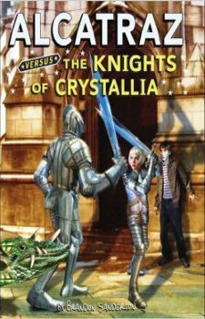

Alcatraz Versus the Knights of Crystallia
- Read on 2018-09-03
- Rating: ️️️️️
- Format: 🎧 (6 hours 46 minutes)
Now returning to his (never-before-visited) homeland, Alcatraz is surrounded by all sorts of new things. Faced with new responsibilities, new relationships, new technologies, and an ever-evolving foe, Alcatraz must wrangle his talent, and prevent awfulness from ensuing.
I enjoy the wit of the author. And the off-hand comments. And the author's interjections. And the talents (see: super powers) of the characters. And the unique world the (real) author has built.
Great YA novels. Also enjoyable for immature adults.